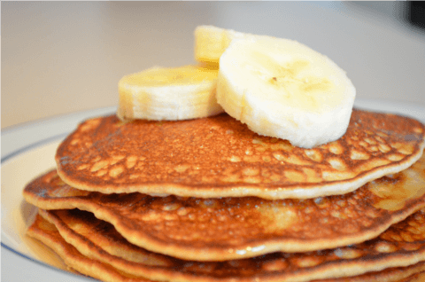

Banana pancakes
Ingredients:
- 1 cup flour
- 1 tablespoon sugar
- 2 teaspoon baking powder
- 1 cup milk
- 1 egg
- 2 medium size bananas
Directions:
- Combine flour, sugar, baking powder and a little bit of salt in a large mixing bowl.
- Whisk milk and egg into the flour mixture until no clumps remain in the resulting batter.
- Add mashed bananas and mix well.
- Add some butter to a medium warm frying pan.
- Make smaller or bigger pancakes, up to you. Wait until tiny air bubbles form on top (2 to 5 minutes),
turn and continue frying until the bottom is browned. Repeat.
Outcome:
